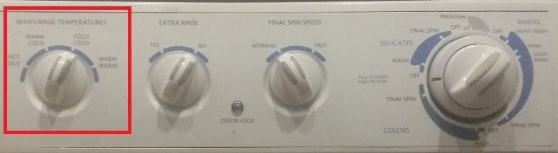

<body bgcolor=#cccccc>
    <font face=arial size=+3>
        <ul>
            <li>Open the soap drawer, pressing the hidden release lever to the right with your finger</li>
            
            
            <li>Laundry detergent is in the top drawer to the left of the washing machine</li>
            
            <li>Shut door firmly or else the machine will not start/li>
            <li>Choose water temperature, cold if you think your colors could run</li>
            
            <li>Pull out dial</li>
            <li>Choose mode for your clothes (delicate or colors or whites)</li>
            <li>Pull dial out and rotate it to point at the one of the three "wash" settings you prefer.  Depress dial to begin the cycle</li>
            
        </ul>
    </font>
    